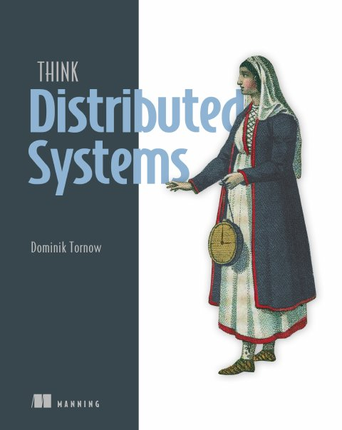

1st edition · 2025 · Manning Publications
Think Distributed Systems
Dominik Tornow
The book's premise is that every modern application is a distributed system. It teaches mental models for distributed systems rather than technologies or a catalog of algorithms: it aims for models that are correct and complete enough to reason with (about this book, p. xiv; pp. 3–4). It's written for software engineers from first principles, with no prior experience needed (p. xiv). It deliberately has few code examples, because the hard part of distributed systems is the interaction between components, not the implementation of one (p. xv). It uses system models and illustrations instead.
Recurring devices throughout the book:
- Aha! moments, where the author shares the insight that made a concept click.
- Distributed Systems Incorporated, an office building whose rooms are components and whose pneumatic tubes are the network (pp. 16–18).
- Precise, code-free definitions of race conditions, concurrency, idempotence and services.
The author, Dominik Tornow, is the founder and CEO of Resonate HQ and specializes in systems engineering and modelling (about the author, p. xvi).
Chapters
Each lesson walks the chapter section by section — notes with page references, diagrams, simulations, a recap and a self-check. Use ← → to move between slides.
- Chapter 1 · pp. 1–22Thinking in distributed systems: Models, mindsets, and mechanicsThe book's premise is that every modern application is distributed.▶ simulation
- Chapter 2 · pp. 23–39System models, order, and timeEvery algorithm is correct only relative to a system model: a set of assumptions about components, the network and timing (p.▶ simulation
- Chapter 3 · pp. 40–54Failure toleranceFailure tolerance is the guarantee that a system behaves in a well-defined way even when failures occur (p.▶ simulation⌘ lab
- Chapter 4 · pp. 55–66Message delivery and processing"Exactly once" is a phrase full of misconceptions.▶ simulation⌘ lab
- Chapter 5 · pp. 67–78TransactionsTransactions come from databases, not distributed systems, but they've become the benchmark for developer experience in distributed systems.▶ simulation
- Chapter 6 · pp. 79–89Distributed transactionsA distributed transaction spans several resource managers (RMs): databases, but also systems such as message queues (p.▶ simulation
- Chapter 7 · pp. 90–105PartitioningPartitioning and replication are the two essential techniques for scalability and reliability.▶ simulation⌘ lab
- Chapter 8 · pp. 106–116ReplicationDurability means a committed transaction can't go back on its word, and business processes depend on such promises.▶ simulation⌘ lab
- Chapter 9 · pp. 117–130ConsistencyIn databases, consistency means application-level validity.▶ simulation
- Chapter 10 · pp. 131–144Distributed consensusDistributed consensus lets a group of redundant processes advance in lockstep and act as one, so some can compensate for the failure of others.▶ simulation⌘ lab
- Chapter 11 · pp. 145–155Durable executionsDurable executions are to distributed systems what transactions are to databases: an abstraction that hides the possibility of failure (p.▶ simulation⌘ lab
- Chapter 12 · pp. 156–167Cloud and servicesCloud, cloud-native, serverless and microservices are everywhere, yet their meanings are vague.▶ simulation
How the book fits together
The road map runs from fundamental to advanced concepts in 12 chapters (pp. xiv–xv):
- Chapters 1–4 build the vocabulary: mental models, system models and time, failure, and message delivery.
- Chapters 5–6 show transactions as the abstraction that hides concurrency and failure, on one node and on many.
- Chapters 7–10 cover the techniques for scalability and reliability (partitioning and replication), what replicas may show (consistency), and how to agree (consensus).
- Chapters 11–12 apply everything to long-running processes (durable executions) and to the cloud and services.
flowchart TB
C1["1 · Thinking in distributed systems"] --> C2["2 · System models, order, and time"] --> C3["3 · Failure tolerance"] --> C4["4 · Message delivery and processing"]
C1 --> C5["5 · Transactions"] --> C6["6 · Distributed transactions"]
C3 --> C6
C1 --> C7["7 · Partitioning"]
C1 --> C8["8 · Replication"] --> C9["9 · Consistency"] --> C10["10 · Distributed consensus"]
C6 --> C10
C3 & C4 & C5 --> C11["11 · Durable executions"]
C7 & C8 & C11 --> C12["12 · Cloud and services"]The arrows are the vault's reading of the chapters' dependencies; the chapter order is the book's.
Some threads run through the whole book:
- Safety and liveness define correctness (1), classify failure tolerance (3), specify atomic commitment (6) and specify consensus (10).
- Global vs. local view appears in Distributed Systems Incorporated (1), the sender's uncertainty (4) and services as contracts (12).
- Equivalence appears as serializability (1, 5), exactly-once semantics (4), "one thing" in replication (8), consistency models (9) and failure-transparent recovery (11).
- Application level vs. platform level separates failure classes (3), ACID's consistency from A, I and D (5), Raft's two layers (10), and sagas from durable execution (11).
Simulations
Interactive models of the mechanisms the book describes. They are embedded in the lessons too; implementations are the vault’s own.
- Chapter 1The behavior space of a two-participant transactionStep the two participants of the book's distributed transaction (Figure 1.9) one transition at a time, enumerate every behavior, and see which violate safety, which violate liveness and which are correct.
- Chapter 1Interleavings and race conditionsTwo processes each read, update and write a shared counter. Enumerate all 20 interleavings of their actions, see which give a result no serial order gives, or build an interleaving step by step.
- Chapter 2Proposers, acceptors and a coordinatorReplay Figures 2.11 and 2.12: two proposers broadcast +2 and ×2 to two acceptors. Shuffle the network's delivery order and watch the acceptors diverge, then route requests through a coordinator that tags them so the acceptors can reorder.
- Chapter 2Happened-before and Lamport clocksBuild a space-time diagram of three components with local events and messages, pick any two events to see whether one happened before the other or they are concurrent, and check Lamport clock consistency.
- Chapter 3Escalating failure handlingRun an e-commerce checkout's Charge credit card step against transient, intermittent and permanent CouldNotConnect failures and an InsufficientFunds failure, and watch the strategy escalate from immediate retry to backoff, to suspend-repair-resume, to compensation and the human layer.
- Chapter 3Masking, nonmasking and fail-safe failure toleranceInject failures into the book's one-variable process (Listing 3.1) and into a FIFO queue that is nonmasking or fail-safe, and see which of safety and liveness each gives up while the failure lasts.
- Chapter 4Deduplicating a retried requestPick a receiver-side handler (track then process, process then track, or transactional), crash the receiver at a chosen point, let the sender retry, and count how many times the balance transfer actually happened.
- Chapter 5A restartable Undo logRun the book's money transfer with an Undo log, crash it between recording an Undo and applying its operation or in the middle of recovery, and compare a relative Undo (add 10 back) with one that restores the old value. Only the second is noop and idempotent.
- Chapter 6Two-Phase Commit: recovery and blockingRun Two-Phase Commit between a coordinator and two resource managers, crash one of them at a chosen step, watch each recovering RM apply the rule for its last log entry, then try the two improvements: asking a peer, and timing out to abort.
- Chapter 7Partitioning and balancingAssign 20,000 synthetic words to partitions by first-letter range, by hash modulo and by consistent hashing; change the partition count from 5 to 6 to compare variance and relocation; then balance partitions onto nodes and see where overpartitioning runs out.
- Chapter 8Majority-voted redundancyFeed inputs through one logic gate or three replicated gates with replicated majority voters, fail any component, and see when the output is still right; then measure reliability by simulation and compare with 3p² − 2p³.
- Chapter 8Replicating a counterIssue increment-by(n) operations to a leader with two followers, switch between synchronous, asynchronous and quorum acknowledgment and between state-based and log-based messages, then cut a link to turn inherent replication lag into imposed lag.
- Chapter 9Is this history linearizable?Move the operations of three processes on a register along a timeline and let the checker search for a sequential order that gives the same results and respects real time, or explain why none exists.
- Chapter 9The eventually consistent shopping cartPartition two replicas of a shopping cart, add and remove items on each side, heal the partition and compare reconciliation rules: Amazon's adds-win union, last write wins, a grow-only set, and an observed-remove set.
- Chapter 10Raft’s election restriction and the three puzzlesLoad the book's three Raft puzzles or build your own logs, see which nodes the up-to-date rule lets win an election, crash the leader, elect a new one and check whether request 9 survives.
- Chapter 11Restart, resume and replayRun the book's alphabet() process, crash it after any step, recover by restart, by resuming from a save point or by log-based replay, and check the resulting trace against each equivalence function; then branch on the clock outside a step and watch replay diverge.
- Chapter 12Cold path, hot pathSend seeded bursts of events to a traditional system with pre-provisioned instances and to a serverless one that acquires resources after each event arrives; change the serverless keep-alive and trade cold-path latency against resources held idle.
Lab experiments
Deterministic Python (standard library only). Run each from its folder; the README lists the expected output.
| Ch. | Experiment | Command |
|---|---|---|
| 3 | Retry strategies vs. failure classes | python3 retry_strategies.py |
| 4 | Exactly-once by idempotence | python3 idempotent_retries.py |
| 7 | Range, hash and consistent hashing | python3 assignment_strategies.py |
| 8 | Majority-voted redundancy | python3 majority_redundancy.py |
| 10 | Raft election timeouts | python3 raft_election_timeouts.py |
| 11 | Log-based durable execution | python3 durable_replay.py |
Key concepts
These ideas recur across chapters; each row lists the chapters that discuss them. The definitions are the vault's summaries of the book's explanations.
| Concept | Definition | Chapters |
|---|---|---|
| Mental model | An internal representation of a system. A good one is correct (no falsehoods) and complete (no relevant omissions). | 1 · 12 |
| Safety and liveness | Safety: something bad never happens. Liveness: something good eventually happens. A system is correct if every possible behavior satisfies both. | 1 · 3 · 6 · 10 |
| Global vs. local view | An all-knowing observer sees the whole system; a component sees only its own state and its channel to "the rest of the system". | 1 · 4 · 12 |
| System model | The assumptions about components, network and timing that an algorithm's correctness depends on. The realistic one is partially synchronous, with crash and recovery failures over an unreliable network. | 2 · 4 · 8 |
| Race condition | A system with several possible executions (interleavings), some of which are considered incorrect. | 1 · 2 · 5 |
| Happened-before | Lamport's partial order of events: intra-component order and send→receive, closed under transitivity. It captures potential causality. | 2 |
| Failure tolerance | Behaving in a well-defined way despite failures. It is masking (safe and live), nonmasking (live), or fail-safe (safe). | 3 · 6 |
| Forward vs. backward recovery | Forward recovery pushes past a failure to the final state (retries, Redo). Backward recovery returns to the initial state (compensation, Undo). | 3 · 5 · 11 |
| Idempotence | Repeating an operation has an effect equivalent to doing it once. Together with at-least-once processing, it yields exactly-once processing semantics. | 4 · 5 · 11 |
| Serializability | Concurrent transactions are correct if their effect is equivalent to some serial order. | 1 · 5 · 9 |
| Atomic commitment | All participants of a distributed transaction commit, or all abort. Two-Phase Commit does this but blocks if its coordinator fails. | 6 · 10 |
| Partitioning vs. replication | Partitioning represents one logical object by disjoint parts, for scalability. Replication represents it by identical wholes, for reliability. | 7 · 8 |
| Consistency model | A predicate on histories that separates valid from invalid ones. Stronger models allow fewer histories; linearizability and eventual consistency are the two extremes. | 5 · 9 |
| Quorum | A majority of processes (Q > N/2), so any two quorums intersect. Tolerating f failures needs 2f + 1 processes. | 8 · 10 |
| State machine replication | Identical deterministic processes fed the same inputs in the same order stay in lockstep. Consensus on the log makes a group fault-tolerant. | 8 · 10 |
| Failure transparency | A failed and recovered execution is equivalent to a failure-free one, under an equivalence the application chooses. | 3 · 11 |
| Elasticity | Achieving scalability and reliability by acquiring and releasing resources on demand. It is the basis of cloud-native and serverless computing. | 7 · 12 |